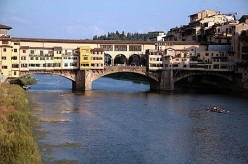

Sat, 20 Nov 2010 05:30:00 · cities · florence · paris · europe · travel · walk · photography
The World's Most Walkable Cities

Guess which cities are in the Top 10 for the world’s most walkable place? Is it surprising that most of them are in the good ol’ Europe? See here for complete list.